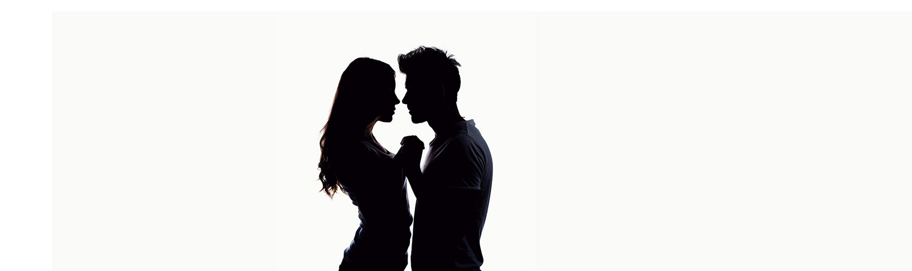

Sexualidade na adolescência
A adolescência é a fase das dúvidas e das descobertas e é também nesta altura que os futuros adultos se deparam com os maiores problemas relativamente à descoberta da sua sexualidade.
Com efeito, neste contexto, há a referir que Portugal é um dos países onde existem mais mães adolescentes. Apesar da crescente informação disponibilizada na área da contracepção e das doenças sexualmente transmissíveis, os casos continuam a verificar-se.
Todavia, este problema começa exactamente em casa, onde ainda se verifica uma grande relutância por parte dos pais e encarregados de educação em abordar temas ligados à sexualidade e ao planeamento familiar. Para começar, os jovens têm que aprender à sua custa que a reprodução e a sexualidade são duas áreas distintas da função sexual.
Muitos pais pensam que a Educação Sexual que os seus filhos recebem na escola é suficiente para os preparar para a sua vida sexual futura. Porém, esta posição está longe de ser correcta, uma vez que a informação que é passada na escola peca pela ausência da emotividade e carinho que os pais põem na sua relação com os filhos.
O aparecimento dos primeiros sinais de puberdade, ou seja a primeira menstruação, no caso das raparigas, e a primeira ejaculação nos rapazes, deve constituir um acontecimento positivo, que marca o início de mais uma fase do seu crescimento e que de modo algum deve ser encarada como sendo algo de negativo. Diversos estudos levados a cabo nesta área deixaram claro que os jovens que receberam uma educação centrada na informação sobre sexualidade e contracepção, iniciam a sua vida sexual mais tarde e de uma forma mais consciente.
Assim, está nas mãos de pais e educadores capacitar os/as adolescentes e jovens para que assumam as suas próprias responsabilidades e atuem em conformidade, dando resposta às suas necessidades e procurando a sua resolução. É desta forma que se torna mais fácil ajudar e apoiar a população jovem, pois aumentando o seu grau de autonomia ajudamo-los a crescer e a tornarem-se capazes de tomar decisões sobre o que querem fazer.
Por fim, lembremo-nos que falar de sexo pode ser constrangedor para si, mas também o será para o seu/sua filho/a adolescente. É normal. Mas não é desculpa para não o fazer!